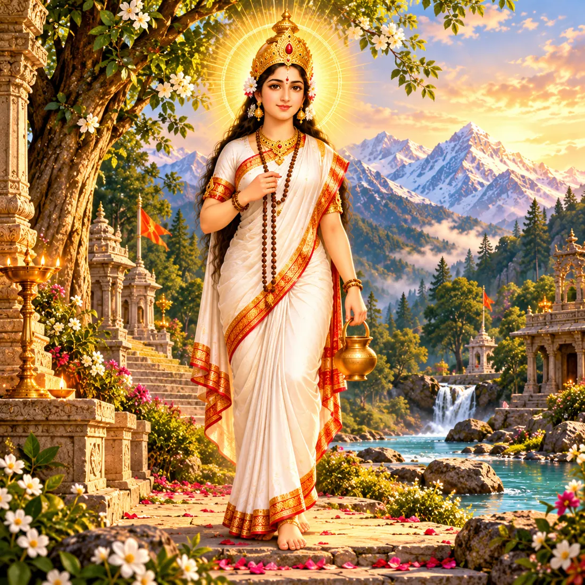
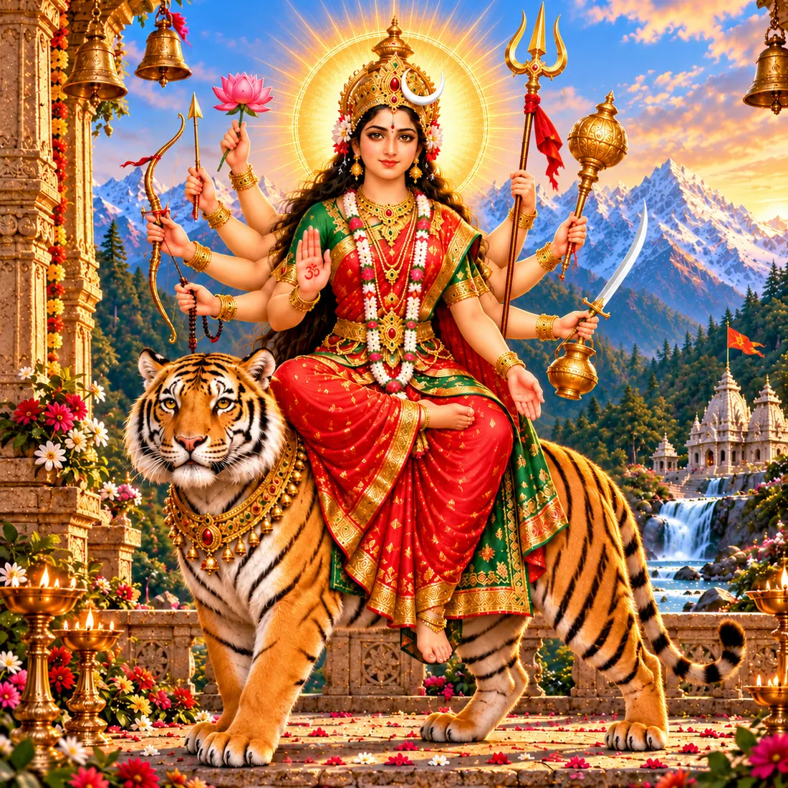
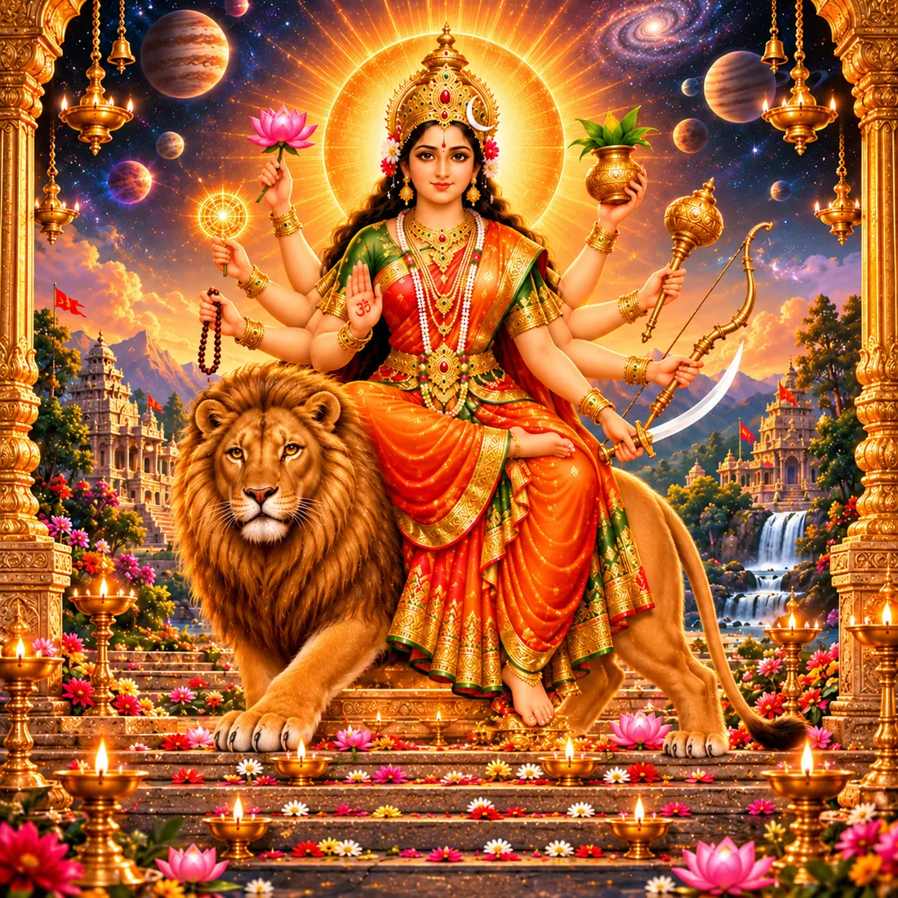
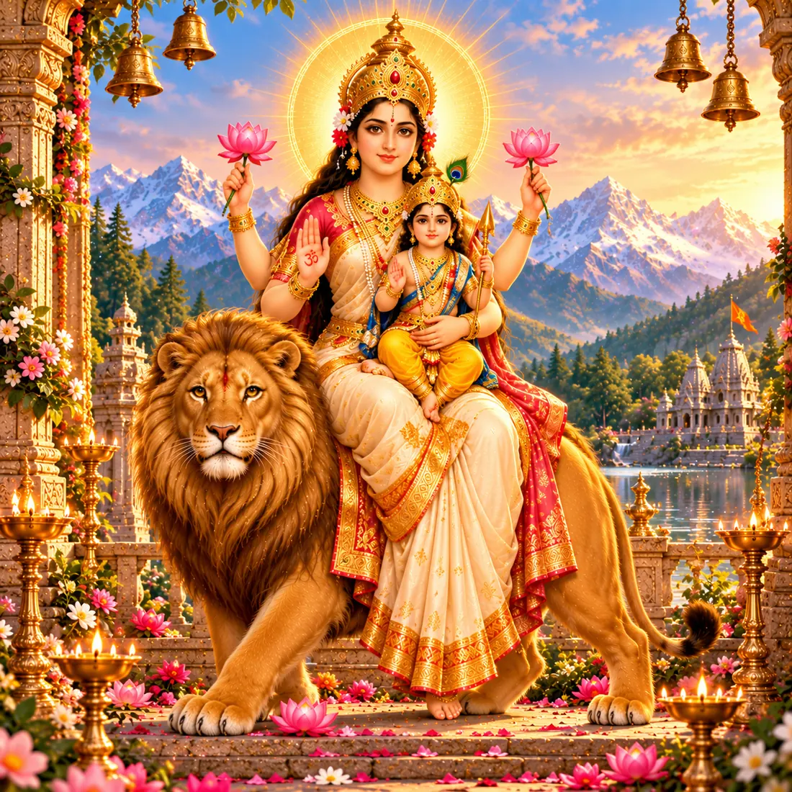
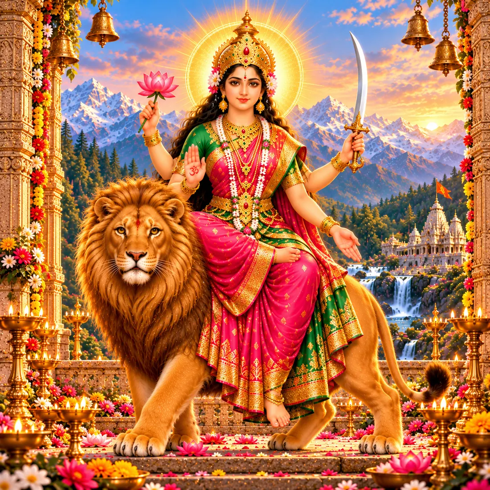
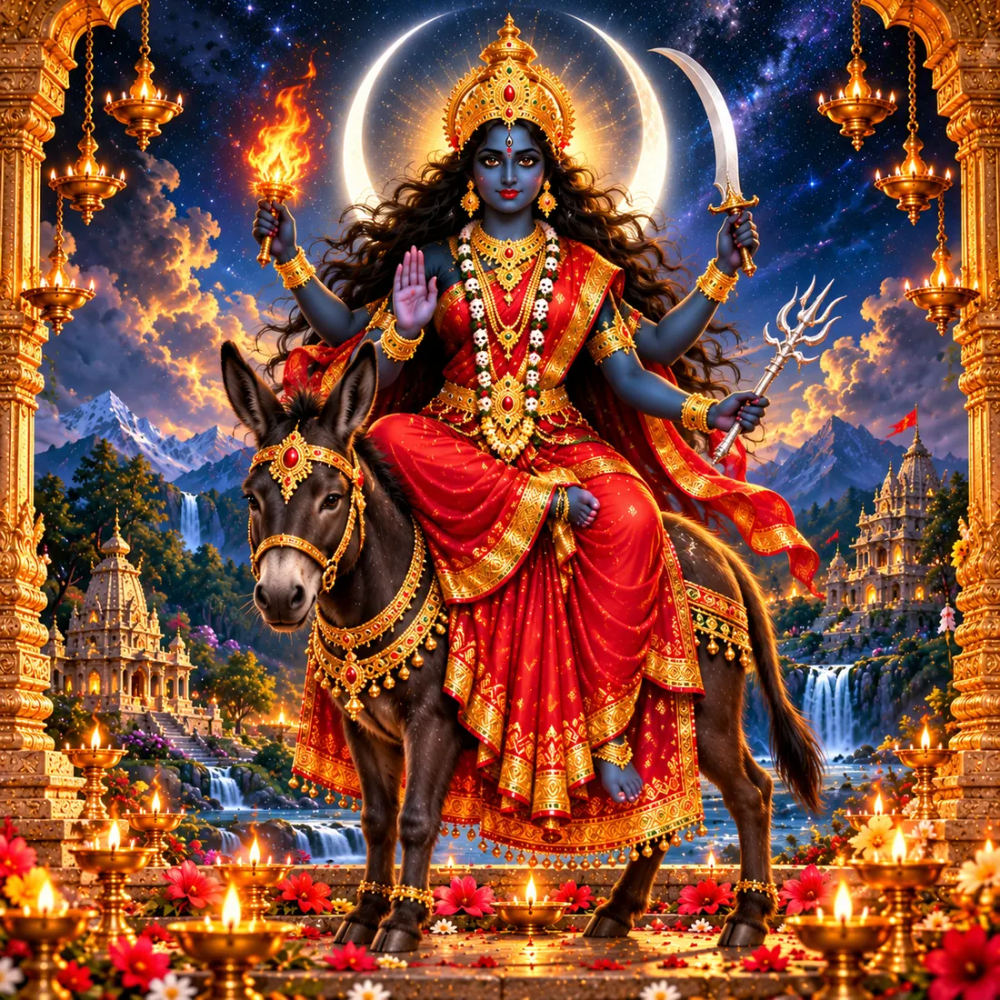
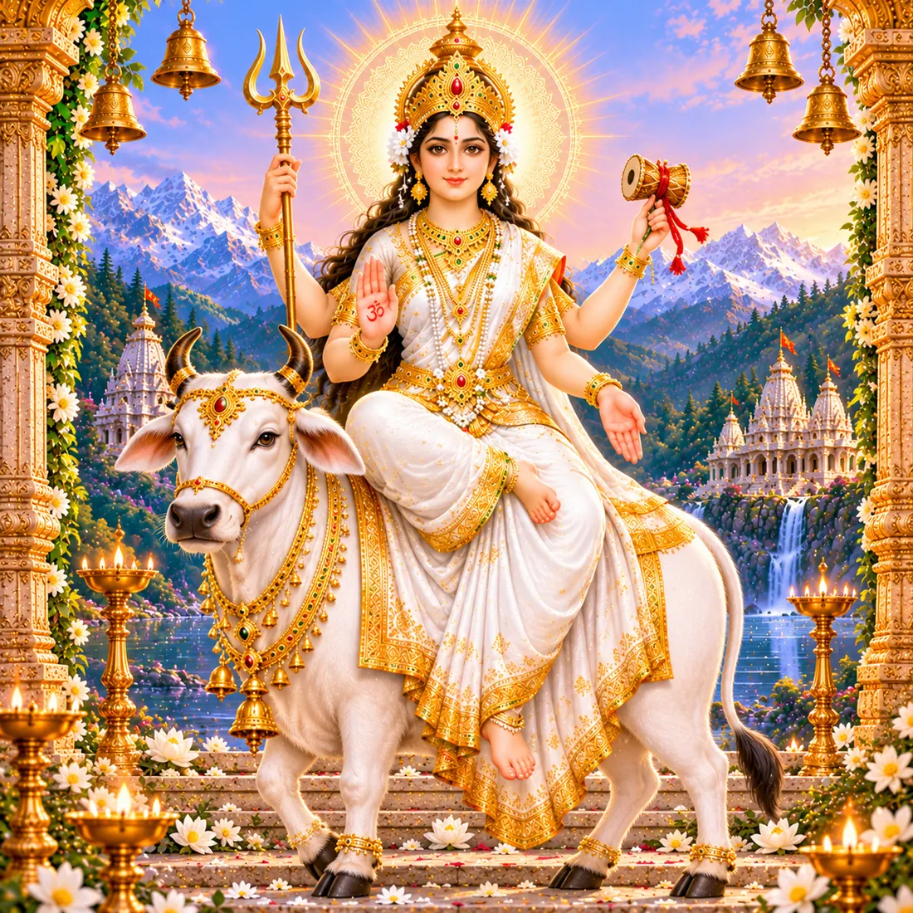
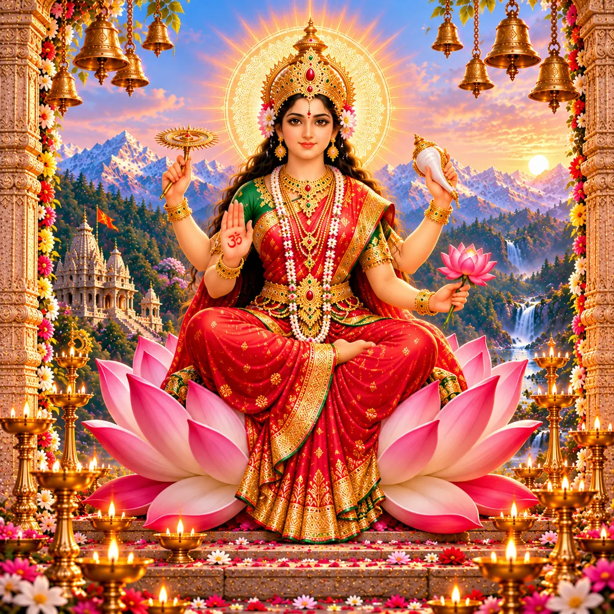

Nine nights, nine forms of the Goddess — and the tenth day of victory
Sun 11 – Mon 19 October 2026 · Dussehra Tue 20 October
Nine DurgasGhatasthapanaFastingKanya PujanGarba & DandiyaVijayadashami
Begins
Sun 11 Oct 2026
Ghatasthapana
6:19 – 10:12 AM IST (indicative)
Ashtami + Navami
Mon 19 Oct
Dussehra
Tue 20 Oct
📅 Read this first: dates, timings and colours
Day 1 is Sunday 11 October. Navratri begins on Ashwin Shukla Pratipada, after Mahalaya.
Ashtami and Navami meet on Monday 19 October this year, so some families keep Kanya Pujan on 18 October and others on 19 October. Follow your own family custom or local temple panchang.
Muhurat times are for India (IST). Outside India, use your own city's panchang or temple calendar; if the best window is missed, the Abhijit muhurat around local noon is the traditional fallback.
The nine colours are a custom, not scripture. They follow the weekday and vary by region and year. Wearing them is a joyful tradition; nothing is lost if you do not.
What is Sharad Navratri?
The great autumn festival of the Goddess
Nava-ratri means “nine nights.”
Of the four Navratris in the Hindu year, two are widely observed: Chaitra Navratri in spring, which ends with Ram Navami, and Sharad Navratri in autumn (the month of Ashwin), the grandest of all. It is dedicated to Durga — Shakti, the divine feminine energy — in her nine forms, the Navadurga.
It is a festival of three layers: nine nights of worship and fasting, the joyful dancing of garba and dandiya in the evenings, and the tenth day, Vijayadashami, when good wins over evil. In 2026 it falls from 11 to 19 October, with Dussehra on 20 October.
9
nights of worship
9
goddesses, 9 colours
2023
Garba on UNESCO list
Key Dates 2026
Mark your calendar
Day 1 · Ghatasthapana
Sun 11 October
Kalash is installed, akhand jyoti lit. Indicative window 6:19–10:12 AM IST.
Day 7 · Kalaratri
Sat 17 October
The most intense night of the festival for many devotees.
Day 8 · Durga Ashtami
Sun 18 – Mon 19 October
Ashtami and Navami tithis meet; Kanya Pujan and Sandhi Puja. Check local panchang.
Day 9 · Maha Navami
Mon 19 October
Havan, Kanya Pujan, and the end of the fast for many families.
Vijayadashami · Dussehra
Tue 20 October
Ravana effigies burn, Durga immersion in Bengal, Shastra Puja, Vidyarambham.
The Story: Durga and Mahishasura
From the Devi Mahatmya (Durga Saptashati)
1
A boon and a tyrant
The buffalo-demon Mahishasura performed fierce austerities and won a boon from Brahma that no man or god could kill him. Confident that he was invincible, he defeated Indra, seized heaven and drove the gods out.
2
A light is born
Helpless, the gods went to Vishnu and Shiva. Their anger rose as a blaze of light, and the light of all the gods joined it. From that radiance a Goddess appeared: Durga. Shiva gave her a trident, Vishnu a discus, Indra a thunderbolt, Varuna a conch, and the Himalaya gave her a lion to ride.
3
Nine days of battle
Mahishasura sent his armies, then came himself, changing shape again and again — buffalo, lion, elephant, man. Durga fought him for nine days and nights. This is the heart of Navratri: the long struggle that is not won in a single stroke.
4
The tenth day
On the tenth day the Goddess slew him, and the gods were free. The boon had said no man could kill him; it was the Goddess, Shakti herself, who did. The day is Vijayadashami, “the tenth day of victory.”
Shailaputri is Parvati in the first form of this life: the daughter (putri) of Himavan, king of the mountains (shaila). In her previous birth she was Sati, who gave up her body in grief at her father Daksha's yagna. Reborn in the Himalaya, she rides the bull Nandi, with a trident in her right hand and a lotus in her left. Day one is about the root: a steady foundation and a fresh start before the nine days ahead.
Offering: Pure ghee, offered at her feet — traditionally for health and well-being.
ॐ देवी शैलपुत्र्यै नमः
Om Devi Shailaputryai Namah
Day2
Monday, 12 Oct
Brahmacharini
ब्रह्मचारिणी
She who walks the path of austerity
Colour of the day: White

Maa Brahmacharini · माँ ब्रह्मचारिणी
Brahmacharini is Parvati in her years of tapasya, determined to win Shiva as her husband. Guided by the sage Narada, she lived first on fruit and flowers, then on leaves, and at last on nothing at all — which is why she is also called Aparna, “without even a leaf.” She walks barefoot, a rosary in her right hand and a water-pot (kamandalu) in her left. Day two honours discipline, patience, and the strength to keep going when results are slow.
Offering: Sugar or mishri — traditionally for long life and a calm mind.
ॐ देवी ब्रह्मचारिण्यै नमः
Om Devi Brahmacharinyai Namah
Day3
Tuesday, 13 Oct
Chandraghanta
चंद्रघंटा
She of the crescent-moon bell
Colour of the day: Red

Maa Chandraghanta · माँ चंद्रघंटा
After her marriage to Shiva, Parvati wore a half-moon shaped like a bell (ghanta) on her forehead — hence Chandraghanta. She rides a tigress and has ten arms holding weapons; the sound of her bell is said to drive away fear and evil. Fierce in battle, her face is serene and golden. Day three is for courage that stays calm, and for peace in the home.
Offering: Milk or kheer — traditionally for the removal of suffering.
ॐ देवी चन्द्रघण्टायै नमः
Om Devi Chandraghantayai Namah
Day4
Wednesday, 14 Oct
Kushmanda
कूष्मांडा
Creator of the cosmos with a smile
Colour of the day: Royal blue

Maa Kushmanda · माँ कूष्मांडा
In the beginning there was only darkness. Kushmanda — ku (a little), ushma (warmth), anda (egg) — is said to have brought the universe into being with a gentle smile, the “cosmic egg.” She dwells within the sun and gives it its radiance. Eight-armed, she holds a pot of nectar and a rosary and rides a lion. Day four is for health, energy and the joy of beginning something new.
Offering: Malpua — traditionally for a sharp mind and good health.
ॐ देवी कूष्माण्डायै नमः
Om Devi Kushmandayai Namah
Day5
Thursday, 15 Oct
Skandamata
स्कंदमाता
Mother of Skanda
Colour of the day: Yellow

Maa Skandamata · माँ स्कंदमाता
Skandamata is Parvati as the mother of Skanda — Kartikeya, or Murugan — the commander of the gods' army who slew the demon Tarakasura. She sits on a lotus with the child Skanda on her lap, which is why she is also called Padmasana Devi. Day five honours motherhood: the fierce, protective love that raises a warrior of dharma. A good day to remember our own mothers and those who raised us.
Offering: Bananas — traditionally for good health.
ॐ देवी स्कन्दमात्रे नमः
Om Devi Skandamatre Namah
Day6
Friday, 16 Oct
Katyayani
कात्यायनी
Warrior-goddess, slayer of Mahishasura
Colour of the day: Green

Maa Katyayani · माँ कात्यायनी
Born as the daughter of the sage Katyayana, who had prayed for the Goddess to be his child, Katyayani is the fierce form of Durga who slew Mahishasura. She has four arms and rides a lion, with a sword in one hand and a lotus in another. In the Bhagavata Purana the gopis of Vraja worshipped Katyayani for a month, so she is also prayed to for a good life-partner. Day six is for righteous courage and a sacred purpose.
Offering: Honey — traditionally for a pleasing voice and good fortune.
ॐ देवी कात्यायन्यै नमः
Om Devi Katyayanyai Namah
Day7
Saturday, 17 Oct
Kalaratri
कालरात्रि
The dark night that ends fear
Colour of the day: Grey

Maa Kalaratri · माँ कालरात्रि
Kalaratri is the most fearsome form: dark as night, with loose flying hair, three blazing eyes, and she rides a donkey. Yet her right hands are raised in blessing and fearlessness (abhaya and varada mudras), so she is also called Shubhankari, “the one who does good.” Day seven is about the end of ignorance and fear — the darkest hour before dawn. Many devotees keep an evening or night-time puja today.
Offering: Jaggery — traditionally to be free from sorrow and fear.
ॐ देवी कालरात्र्यै नमः
Om Devi Kalaratryai Namah
Day8
Sunday, 18 Oct
MahagauriAshtami
महागौरी
The radiantly pure, fair goddess
Colour of the day: Purple

Maa Mahagauri · माँ महागौरी
After long penance Parvati's skin turned dark and dusty. Pleased, Shiva bathed her in the Ganga, and she shone white as a conch, the moon and jasmine — Mahagauri. She rides a white bull, holding a trident and a damaru drum. Day eight, Durga Ashtami, is the high point of the festival: purity, forgiveness and peace, the day for Kanya Pujan and — in Bengal — Sandhi Puja.
Offering: Coconut — traditionally for a wish to be fulfilled.
ॐ देवी महागौर्यै नमः
Om Devi Mahagauryai Namah
Day9
Monday, 19 Oct
SiddhidatriMaha Navami
सिद्धिदात्री
Giver of perfection
Colour of the day: Peacock green

Maa Siddhidatri · माँ सिद्धिदात्री
Siddhidatri grants the siddhis — spiritual powers and perfections. She sits on a lotus holding a mace, discus, conch and lotus. The Devi Purana says Shiva himself gained all his siddhis through her grace, and half of his form became hers: Ardhanarishvara. Day nine, Maha Navami, completes the cycle with gratitude and fulfilment — Kanya Pujan, havan and the final aarti.
Offering: Sesame seeds; halwa, puri and chana at Kanya Pujan.
“First Shailaputri, second Brahmacharini, third Chandraghanta, fourth Kushmanda, fifth Skandamata, sixth Katyayani, seventh Kalaratri, eighth Mahagauri, ninth Siddhidatri — these are the Nine Durgas.”
— Devi Kavacha, from the Markandeya Purana tradition
Ghatasthapana: Day 1 Ritual
Installing the sacred kalash
What you need
A clean clay, copper or brass pot (kalash) and a shallow earthen dish
Clean soil and barley (jau) seeds
Clean water (a few drops of Ganga jal if you have it)
A coconut wrapped in red cloth (chunri), 5 or 7 mango leaves
Mauli/kalawa thread, roli or kumkum, rice (akshat), a betel nut and a coin
A diya or lamp for the akhand jyoti, and an image or yantra of the Goddess
1
Clean and sit
Bathe, clean the puja corner and sit facing east or north if possible. Invoke Ganesha first, then take your sankalp (a quiet intention for the nine days).
2
Sow the barley
Spread a layer of soil in the dish, scatter the barley seeds, add another thin layer of soil. The green shoots over nine days symbolise growth and prosperity.
3
Fill the kalash
Fill the pot with clean water; add the betel nut, coin, a pinch of rice and a few drops of Ganga jal. Tie mauli around its neck.
4
Crown it
Place the mango leaves around the mouth and the red-wrapped coconut on top.
5
Install it
Set the kalash on the soil bed. Offer roli, rice and flowers, and invite the Goddess to reside there for nine days.
6
Light the lamp
Light the diya. Keep it burning through the nine days if you can; if not, light it at morning and evening aarti. Sprinkle water on the barley daily.
Muhurat tip: The first third of the day after sunrise on Pratipada is considered best; the Abhijit muhurat around noon is the fallback. If you cannot do it at the exact time, a sincere, calm installation matters more than the clock.
Fasting (Vrat)
Simple, satvik and flexible
Three common ways to fast
All nine days — one fruit-and-milk or single satvik meal a day
First and last days only (Pratipada and Ashtami/Navami)
One meal a day (ekabhukta) — a normal satvik meal without grains, once a day
Usually allowed
Fruits, nuts, makhana
Milk, curd, paneer, ghee
Sabudana, sama rice (samak)
Kuttu, singhara, rajgira flour
Potato, sweet potato, peanuts
Rock salt (sendha namak)
Usually avoided
Wheat, rice, pulses, regular flour
Regular table salt
Onion and garlic
Meat, fish, eggs
Alcohol and tobacco
Heavy, fried, rich food
Kuttu flour food safety: Buckwheat (kuttu) flour has caused food-poisoning outbreaks during Navratri in India, usually from stale or poorly stored flour. Buy fresh flour from a trusted shop, check the date, store it airtight and in a cool place, and use it quickly.
Health first: Children, elders, pregnant women and anyone with diabetes, blood pressure or other conditions should not fast strictly without medical advice. Drink enough water. The Goddess is honoured by devotion, not by hunger.
Ashtami, Navami & Kanya Pujan
Honouring the Goddess in young girls
❁
1
Invite nine girls
Invite nine girls aged roughly 2–10, plus one boy to represent Batuk Bhairav or Langur. If you cannot find nine, even one is fine.
2
Wash their feet
Welcome them, wash their feet with clean water and seat them on a clean mat or cloth.
3
Tilak and thread
Apply tilak, tie a red mauli thread on each wrist and offer flowers.
4
Serve prasad
Serve the traditional meal of halwa, puri and black chana, fed with love and without hurry.
5
Offer gifts
Give a small gift or dakshina — books, stationery, bangles, sweets or a coin.
6
Take blessings
Bow, take their blessings and see them off with joy. Then break your fast with the same prasad.
Sandhi Puja (Bengal tradition)
At the junction (sandhi) of Ashtami and Navami — the last 24 minutes of Ashtami and first 24 minutes of Navami — Durga is believed to have taken the form of Chamunda and slain the demons Chanda and Munda. Bengali pandals offer 108 lamps and 108 lotuses at that exact moment; a conch is sounded and drums beat. Its timing differs by city.
Garba & Dandiya Raas
The dancing nights of Navratri
Garba — the circle of life
Garba comes from garbha, “womb.” Women and men dance in concentric circles around a clay pot with holes (garbo) holding a lit lamp, or around an image of the Goddess. The lamp is the life-spark within; the circle is time itself — birth, life, death and rebirth, with Shakti at the still centre.
Taali (claps) mark the rhythm, usually in sets of two or three
Songs are devotional folk songs to Amba, Ma Kali and Ma Durga, sung in Gujarati
Everyone moves in the same direction; watch and follow
Dandiya Raas — the stick dance
Dandiya is danced in pairs or lines with two decorated sticks. One tradition sees the sticks as Durga's swords in her playful mock battle with Mahishasura; another connects it to the raas of Krishna with the gopis of Vrindavan. The rhythm quickens as the night goes on; partners strike each other's sticks and then their own as they turn.
How an evening unfolds
It begins with the aarti of the Goddess, usually around 8 PM
Garba comes first — slow and graceful, then faster
Dandiya follows, when the sticks come out
Common garba steps include tran tali (three claps), hinch (a swaying folk step) and dodhiyu
The night ends with another aarti and prasad
Your first garba night: tips
Wear comfortable, light clothes: chaniya choli or kediyu, or simply festive clothes you can move in
Dance in the outer circle at first, and follow the people just ahead of you
Carry water; the hours are long
Leave footwear where the organisers ask; many places expect barefoot or soft shoes inside the circle
Nobody is graded. Joining in with joy is the whole point
UNESCO, 2023: “Garba of Gujarat” was inscribed on UNESCO's Representative List of the Intangible Cultural Heritage of Humanity in December 2023. It is one of India's living traditions, from village chowks to community halls across the world.
Vijayadashami: The Tenth Day
Tuesday 20 October 2026
🏹 Rama defeats Ravana
In the Ramayana, Rama slays the ten-headed Ravana, who had abducted Sita. In North India the Ramlila plays end with burning effigies of Ravana, Kumbhakarna and Meghnad. The Ramayana guide tells the full story.
🔱 Durga defeats Mahishasura
In the Devi Mahatmya, the tenth day marks Mahishasura's fall. In Bengal it is also the day the Goddess leaves her maternal home: idols are immersed in rivers with the cry “Asche bochor abar hobe” — “she will return next year.”
🌳 The Pandavas and the shami tree
In the Mahabharata (Virata Parva), the Pandavas hid their weapons in a shami tree before their year of incognito exile, and retrieved them on this day. That is why many families worship weapons, tools and books (Shastra Puja, Ayudha Puja) and exchange shami or apta leaves as symbols of gold and goodwill.
How the day is kept
Aparajita Puja and shami puja in the afternoon
Worship of tools, vehicles, instruments and books
Vidyarambham: in Kerala and elsewhere, children write their first letters today, a very auspicious day to begin learning
Exchanging sweets and greetings: “Vijayadashami ki shubhkamnayein”
One Festival, Many Colours
How India celebrates
💃
Gujarat
Nightly garba and dandiya, with the garbo lamp, are at the centre. Ambaji and Pavagadh are important Shakti shrines.
🎭
North India
Ramlila for nine nights, ending with Ravan Dahan on Dussehra. Many families fast and hold Kanya Pujan. (UNESCO recognised the Ramlila in 2008.)
🥁
Bengal
Durga Puja: Shashthi to Dashami, with grand pandals, dhak drummers, sindoor khela and immersion. (UNESCO recognised Kolkata's Durga Puja in 2021.) A separate guide will follow.
🐘
Mysuru, Karnataka
The royal Dasara: ten days, the palace lit by about 100,000 bulbs, and the Jamboo Savari procession on Vijayadashami with the idol of Chamundeshwari.
🎎
South India: Golu
In Tamil Nadu, Andhra and Karnataka, families arrange steps of dolls (golu, kolu, bombe habba) and invite neighbours for songs and sweets.
🌸
Telangana: Bathukamma
Women build towers of seasonal flowers and sing around them for nine days, immersing them in water at the end.
🏔️
Kullu, Himachal
Kullu Dussehra begins as others end: on Vijayadashami, hundreds of village deities arrive in procession to Lord Raghunath for a week.
Two Mantras for the Nine Nights
Simple to chant, easy to remember
या देवी सर्वभूतेषु शक्तिरूपेण संस्थिता। नमस्तस्यै नमस्तस्यै नमस्तस्यै नमो नमः॥
Ya Devi sarvabhuteshu Shakti-rupena samsthita, Namastasyai namastasyai namastasyai namo namah
“To the Goddess who dwells in all beings in the form of Shakti (strength) — I bow to her, again and again.” (The same verse repeats with other qualities: intelligence, peace, compassion, memory and more.)
— Devi Mahatmya, chapter 5
ॐ ऐं ह्रीं क्लीं चामुण्डायै विच्चे॥
Om Aim Hreem Kleem Chamundayai Vichche
The nine-syllable Navarna mantra, the most important chant of Navratri. Its seed sounds call on knowledge (Aim), abundance (Hreem) and transformative power (Kleem) of the Goddess as Chamunda. Traditionally learnt and chanted with a teacher's guidance; chanting 108 times on a mala is common.
— Durga Saptashati tradition
Why It Still Matters
For families, near and far
The meaning beneath the ritual
Navratri says that the struggle against what is wrong, within us as much as outside us, is a nine-night effort rather than a single moment. Each Durga is a quality we can grow: steadiness, discipline, courage, creativity, nurture, purpose, fearlessness, purity and fulfilment. It also honours women and girls as the living form of the Goddess, a reminder that never goes out of date.
If you live far from India
Keep it small: one kalash, one lamp, one aarti a day is a full Navratri
Look for a local temple, Gujarati or Bengali association: many host garba nights and Durga Puja on weekends
Weekday evenings are hard; many families do the main puja on Day 1, Ashtami and Navami
Include children: let them pick the colour of the day, help with the barley, or lead a garba step
Share the Navadurga names with grandparents on a call, one name a day
🔱
Jai Mata Di!
जय माता दी
Nine nights of the Goddess, so that on the tenth day we can win over what holds us back
Next in the series: Durga Puja in Bengal, then Diwali on 8 November.
Sanatana Series · Sharad Navratri 2026 11–19 October · Ashwin Shukla Pratipada to Navami
Created by
Varun Dogar
With assistance from Claude · Anthropic
Sanatanverse — Monthly Newsletter
New guide every month · Festival calendar · The meaning behind the ritual Free · No ads · For every generation